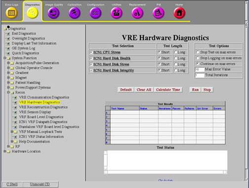

Operating Documentation
Direction 5670000, Rev# 1
Optima MR450w 1.5T Service Methods
Module Version 4.0, Version Date 8/19/08
Operating Documentation |
Diagnostics >> System Function >> Recon >> VRE Hardware Diagnostics
Diagnostics >> Hardware Location >> PGR Cabinet >> Recon >> VRE Hardware Diagnostics
Illustration 1: VRE Hardware Diagnostics

The purpose of this diagnostic is to ensure that the ICN can withstand a CPU (Central Processing Unit) stress test.
ICN motherboard
The ICN is turned on and has at least one network connection from the ICN motherboard Ethernet port to the Host.
Illustration 2: System Cabinet and GOC Diagram

Select the ICN CPU Stress diagnostic from the VRE Hardware Diagnostics screen.
Click [Run].
| NOTE: | Once you click [Run], do not click anywhere else in the Common Service Desktop until the test is complete. If you need to abort the test prior to its completion, you must click [Stop]. |
Ensure that the ICN passes the diagnostic by reviewing the status in the Test Results table.
This diagnostic has either a passed or failed status. If the diagnostic has failed, please review the error log and corresponding extended error messages for subsequent actions. Additional responses to the diagnostic's failed result are outlined in Table 1.
Table 1: Diagnostic Results
| Result | Description | GE Field Action | ||||
| Passed | The ICN passed the diagnostic. | No further action required. | ||||
| Failed | The ICN failed the diagnostic. |
|